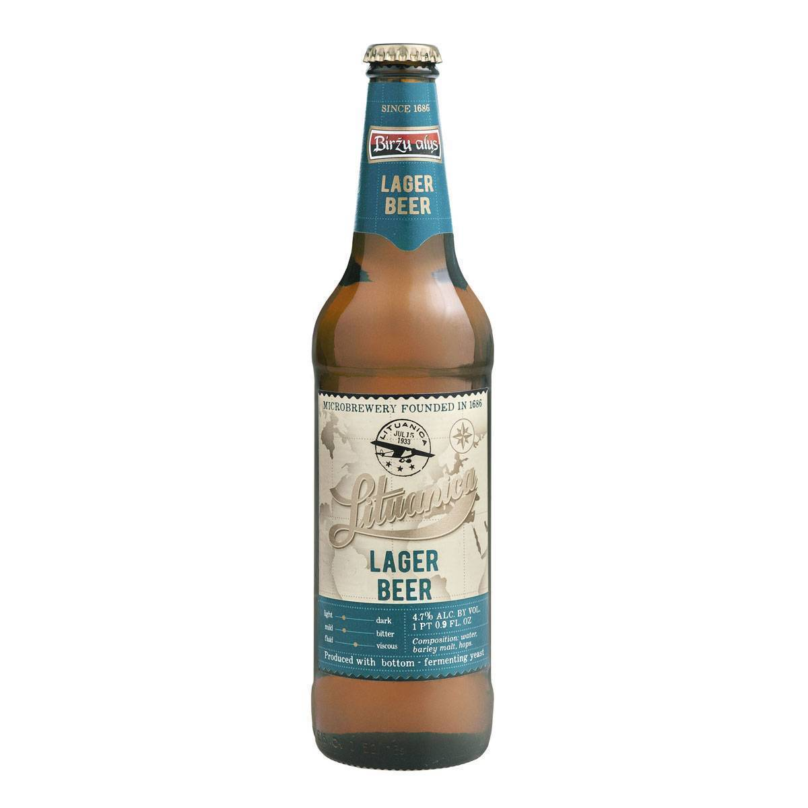

Лагер
Светлое пиво
Темное пиво
Сидр
Эль
Лагер
<< На главную

Тип пива, при изготовлении которого используется низовое брожение с последующей ферментацией при низкой температуре. В настоящее время это наиболее распространённый тип пива, доля которого в мировом потреблении доходит до 80%.